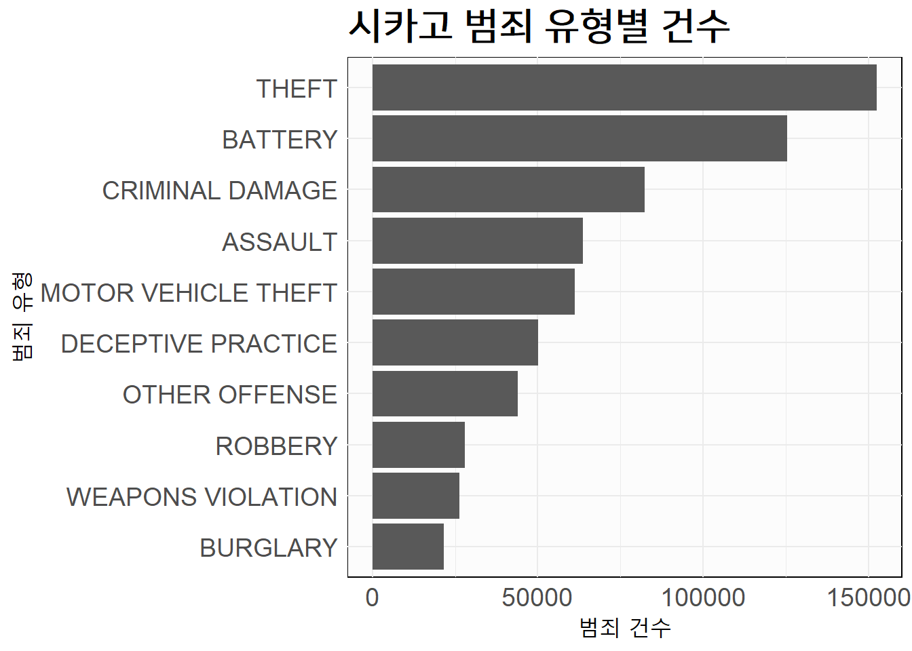

library(tidyverse)
library(duckdb)
crime_csv <- fs::dir_ls("data/crime/")
crime_raw <- crime_csv |>
enframe(value = "filepath") |>
select(-name) |>
mutate(data = map(filepath, read_csv)) |>
mutate(year = str_extract(filepath, "\\d{4}")) |>
select(year, data)
crime_tbl <- crime_raw |>
unnest(data) |>
janitor::clean_names()
crime_tbl |>
glimpse()
#> Rows: 707,153
#> Columns: 23
#> $ year <chr> "2021", "2021", "2021", "2021", "2021", "2021", "…
#> $ id <dbl> 12342615, 26262, 13209581, 13209369, 12374520, 13…
#> $ case_number <chr> "JE202211", "JE366265", "JG422927", "JG422777", "…
#> $ date <chr> "04/17/2021 03:20:00 PM", "09/08/2021 04:45:00 PM…
#> $ block <chr> "081XX S PRAIRIE AVE", "047XX W HARRISON ST", "01…
#> $ iucr <chr> "0325", "0110", "1563", "1153", "0486", "1153", "…
#> $ primary_type <chr> "ROBBERY", "HOMICIDE", "SEX OFFENSE", "DECEPTIVE …
#> $ description <chr> "VEHICULAR HIJACKING", "FIRST DEGREE MURDER", "CR…
#> $ location_description <chr> "RESIDENCE", "CAR WASH", "APARTMENT", "RESIDENCE"…
#> $ arrest <lgl> TRUE, TRUE, FALSE, FALSE, FALSE, FALSE, FALSE, FA…
#> $ domestic <lgl> FALSE, FALSE, FALSE, FALSE, TRUE, FALSE, FALSE, F…
#> $ beat <chr> "0631", "1131", "0411", "0915", "1123", "1412", "…
#> $ district <chr> "006", "011", "004", "009", "011", "014", "017", …
#> $ ward <dbl> 6, 24, 8, 11, 28, 35, 45, 25, 25, 20, 9, 44, 28, …
#> $ community_area <dbl> 44, 25, 45, 60, 27, 21, 16, 31, 31, 40, 73, 6, 28…
#> $ fbi_code <chr> "03", "01A", "17", "11", "08B", "11", "11", "17",…
#> $ x_coordinate <dbl> 1179448, 1144907, NA, NA, 1154131, NA, NA, NA, NA…
#> $ y_coordinate <dbl> 1851073, 1896933, NA, NA, 1900784, NA, NA, NA, NA…
#> $ year_2 <dbl> 2021, 2021, 2021, 2021, 2021, 2021, 2021, 2021, 2…
#> $ updated_on <chr> "09/14/2023 03:41:59 PM", "09/14/2023 03:41:59 PM…
#> $ latitude <dbl> 41.74663, 41.87319, NA, NA, 41.88358, NA, NA, NA,…
#> $ longitude <dbl> -87.61803, -87.74345, NA, NA, -87.70948, NA, NA, …
#> $ location <chr> "(41.746626309, -87.618031954)", "(41.873191445, …17 SQL 데이터셋
(Pandey 2023)
GPT-4와 Bard 같은 AI 모델의 자연어 처리 능력이 급격히 향상되면서, 자연어로 질문된 내용에 대한 SQL 쿼리를 생성하는 ’텍스트-투-SQL’과 같은 다양한 NLP 사용 사례에 대한 발전이 가속화되고 있다. 여러 접근 방식과 솔루션이 시장에 나오면서 어느 것이 가장 효율적인지, 어느 것이 정확한 답을 더 신뢰성 있게 생성하는지, 어느 것이 다양한 데이터셋에 가장 잘 적응하는지 평가하는 문제가 생겼다. 이 질문들에 답하기 위해 오픈소스 산업과 학계는 여러 벤치마크를 제시했지만, 오늘날 가장 많이 사용되는 세 가지는 WikiSQL, Spider, BIRD(BIg Bench for LaRge-scale Database Grounded Text-to-SQL Evaluation)이다. WikiSQL은 Salesforce에 의해 2017년 말에 소개된 최초의 대규모 텍스트-투-SQL 데이터 집합이지만, 단순함이라는 큰 단점이 있다. 제공되는 모든 SQL 쿼리는 SELECT, FROM, WHERE 절만을 포함하는 매우 간단하며, 데이터셋 내의 테이블들은 다른 테이블과의 연결이 없다. WikiSQL로 훈련된 모델은 새로운 데이터베이스에서도 작동할 수 있지만, 간단한 자연어 질문에 대해서만 답할 수 있다. 이러한 이유로 최근 텍스트-투-SQL 분야의 연구는 더 복잡한 벤치마크에 초점을 맞추고 있다. 실제로 WikiSQL 리더보드에는 2021년 이전의 제출물만 있으며, 테스트 정확도 90% 이상을 달성한 여러 제출물들이 있지만(가장 성능이 좋은 제출물은 93%에 도달함), 이제 실무자들은 WikiSQL로는 턱없이 부족한 훨씬 더 복잡한 쿼리 생성에 초점을 맞추고 있다.
Spider 데이터셋은 WikiSQL 데이터셋의 단점 중 일부를 보완하려고 한다. 예일 대학의 11명 학생들이 1,000시간 이상의 노력을 통해 개발된 Spider 데이터셋은 복잡성과 교차 도메인성이라는 두 가지 중요한 요소를 도입한다. 복잡성 측면에서 SQL 쿼리는 WikiSQL이 한정된 간단한 SELECT와 WHERE 절을 넘어서, 더 복잡한 GROUP BY, ORDER BY, HAVING 절과 중첩된 쿼리를 포함한다. 또한, 모든 데이터베이스는 외래 키를 통해 여러 테이블이 연결되어 있어 테이블 간에 조인하는 복잡한 쿼리를 가능하게 한다. 교차 도메인성 측면에서 Spider는 200개의 복잡한 데이터베이스를 많은 도메인에 걸쳐 포함하여, 테스트 세트에서 본 적 없는 데이터베이스를 포함시켜 모델의 일반화 가능성을 테스트할 수 있게 한다. 다양한 제출물을 평가할 때는 다음을 포함한다:
18 시카고 범죄 데이터
crime_tbl |>
count(primary_type, sort = TRUE) |>
head(10) |>
ggplot(aes(x = fct_reorder(primary_type, n), y = n)) +
geom_col() +
coord_flip() +
labs(x = "범죄 유형", y = "범죄 건수", title = "시카고 범죄 유형별 건수")
DuckDB는 Analytical SQLite라는 별명을 갖고 있다. SQLite가 OLTP 데이터베이스라면, DuckDB OLAP 데이터베이스라고 볼 수 있다.
con_dd <- duckdb::dbConnect(duckdb::duckdb())
duckdb::dbWriteTable(con_dd, "crime_tbl", crime_tbl, overwrite = TRUE)
duckdb::dbListTables(con_dd)
#> [1] "crime_tbl"
dbGetQuery(con_dd, "SELECT COUNT(*) AS '범죄수' FROM crime_tbl")
#> 범죄수
#> 1 707153time <- function(call) {
print(system.time(call())[[1]])
}
time(\() duckdb::dbWriteTable(con_dd, "crime_tbl", crime_tbl, overwrite = TRUE))
#> [1] 0.73
time(\() dbGetQuery(con_dd, "SELECT COUNT(*) AS '범죄수' FROM crime_tbl"))
#> [1] 0.14library(RSQLite)
con_sqlite <- dbConnect(RSQLite::SQLite())
time(\() RSQLite::dbWriteTable(con_sqlite, "crime_tbl", crime_tbl, overwrite = TRUE))
#> [1] 1.61crime_schema <- DBI::dbGetQuery(con_dd, 'SELECT * FROM duckdb_tables;')
crime_schema |>
select(sql)
#> sql
#> 1 CREATE TABLE crime_tbl("year" VARCHAR, id DOUBLE, case_number VARCHAR, date VARCHAR, block VARCHAR, iucr VARCHAR, primary_type VARCHAR, description VARCHAR, location_description VARCHAR, arrest BOOLEAN, domestic BOOLEAN, beat VARCHAR, district VARCHAR, ward DOUBLE, community_area DOUBLE, fbi_code VARCHAR, x_coordinate DOUBLE, y_coordinate DOUBLE, year_2 DOUBLE, updated_on VARCHAR, latitude DOUBLE, longitude DOUBLE, "location" VARCHAR);complex_query <- "
SELECT
primary_type,
ROUND(AVG(latitude), 5) AS avg_latitude,
ROUND(AVG(longitude), 5) AS avg_longitude,
SUM(CASE WHEN arrest THEN 1 ELSE 0 END) AS total_arrests,
COUNT(*) AS total_crimes,
year
FROM
crime_tbl
WHERE
year >= '2021' AND year <= '2023'
GROUP BY
primary_type, year
HAVING
COUNT(*) > 100
ORDER BY
total_crimes DESC, primary_type
LIMIT 5;
"
dbGetQuery(con_dd, complex_query)
#> primary_type avg_latitude avg_longitude total_arrests total_crimes year
#> 1 THEFT 41.86707 -87.66762 2738 56770 2023
#> 2 THEFT 41.86597 -87.66691 2019 54853 2022
#> 3 BATTERY 41.83902 -87.66873 6726 43958 2023
#> 4 BATTERY 41.83833 -87.66838 5932 40924 2022
#> 5 THEFT 41.86354 -87.66865 1552 40806 2021작성된 SQL 쿼리는 시카고 범죄 데이터베이스에서 2021년부터 2023년까지 가장 흔한 범죄 유형 상위 5가지를 찾고, 이들의 평균 발생 위치, 체포 건수, 연도별 발생 횟수를 파악하는 것이다.
WHERE절: 범죄 발생 연도를 2021년부터 2023년 사이로 범위를 제한한다.GROUP BY절: 결과를 범죄 유형(primary_type)과 발생 연도(year)별로 그룹화한다.ROUND(AVG(latitude), 5)및ROUND(AVG(longitude), 5): 각 범죄 유형의 평균 위도와 경도를 계산하여 범죄가 일반적으로 발생하는 위치를 파악한다. 평균은 소수점 다섯째 자리까지 반올림된다.SUM(CASE WHEN arrest THEN 1 ELSE 0 END) AS total_arrests: 각 범죄 유형별로 발생한 총 체포 건수를 합산하고,arrest가 참일 때마다 1을 더하는 방식으로 계산한다.COUNT(*) AS total_crimes: 각 범죄 유형별로 발생한 총 범죄 건수를 계산한다.HAVING COUNT(*) > 100: 100건 이상 발생한 범죄 유형만을 필터링하여 신뢰성 있는 데이터만을 대상으로 한다.ORDER BY total_crimes DESC, primary_type: 총 범죄 건수가 많은 순으로 결과를 정렬하고, 동일한 건수일 경우 범죄 유형(primary_type)에 따라 정렬한다.LIMIT 5: 결과를 상위 5가지 범죄 유형으로 한정한다.
time(\() dbGetQuery(con_dd, complex_query) )
#> [1] 0.17
time(\() dbGetQuery(con_sqlite, complex_query) )
#> [1] 0.56